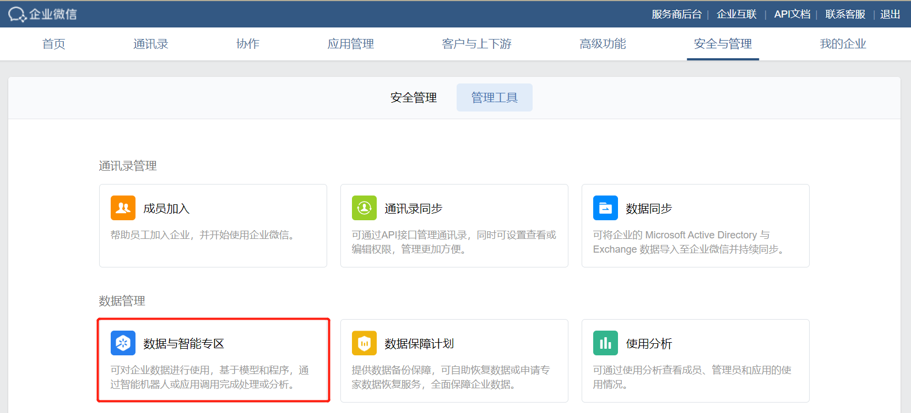

镜像文件配置指引
最后更新：2025/01/20
目录
概述
企业微信提供「数据分析专区」能力，企业可将代码镜像部署在数据分析专区，使用企业会话内容进行分析。
准备镜像
使用 docker-export 将运行环境导出tar包，用于数据与智能专区的镜像导入。请特别注意不能用 docker-save命令生成tar包，否则可能无法执行启动命令。
docker 的相关使用请参考官方文档。
配置镜像
从「管理端 - 管理工具 - 数据与智能专区」入口进入专区。

点击「添加自建模型/程序」，选择要添加自有模型/程序，进入到创建页面。支持最多添加1个自有模型以及2个自有程序。
下面以「添加自有模型」为例进行说明。
点击「配置」模型镜像文件，上传镜像文件，以及配置相应的启动命令和参数。

点击「配置」模型镜像文件，上传镜像文件，以及配置相应的启动命令和参数。
 特别注意
特别注意- 镜像文件：将 docker-export 导出
tar包，上传至此。 - 启动命令/参数：指定镜像启动命令/参数，即docker exec的
COMMAND。
镜像部署到数据专区后，PATH和ENV配置信息可能会丢失，导致部署失败。
解决方案参考：
1. 启动命令和参数指定绝对路径，例如 /usr/local/openjdk-8/bin/java。
2. 启动命令封装一层脚本，在脚本里先设置相关配置信息，然后再执行真正的启动命令，例如 /usr/local/wwspecdemo/start.sh# ... source /etc/profile python3 -u demoloadsdk.py点击复制